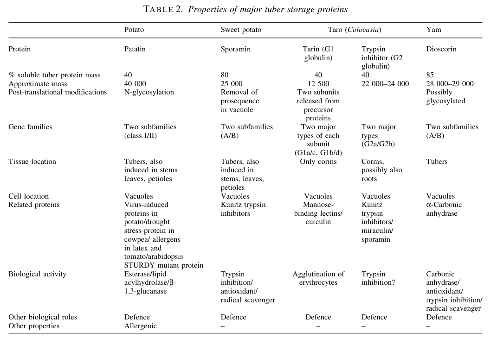

PATB1 (Patatin-B1, UniProt P15476) is a member of the patatin glycoprotein family and one of the canonical potato (Solanum tuberosum) tuber patatins. It is a dual-function protein. First, it is the major soluble STORAGE protein of the potato tuber: patatin accounts for up to ~40% of total soluble tuber protein in mature/larger tubers and is widely interpreted as a nitrogen/carbon reserve. Second, it is a lipid acyl hydrolase (LAH) / phospholipase A-like serine hydrolase of the patatin (PNPLA) domain family, with broad deacylation activity toward glycerolipids - phospholipids (mono- and diacylphospholipids), galactolipids/galactosyl diglycerides and neutral mono- and diglycerides - plus measurable esterase activity on model chromogenic substrates. PATB1 is synthesized as a precursor with an N-terminal 23-residue signal peptide, is N-glycosylated, and is trafficked through the endomembrane system to be deposited in the vacuoles of tuber parenchyma cells; immunocytochemistry localizes patatin mainly to vacuoles and not to the apoplast/cell wall, consistent with the need to sequester a membrane-active lipid hydrolase away from cellular membranes. The patatin catalytic architecture is a Ca2+-independent serine hydrolase with a Ser-Asp dyad (PROSITE PNPLA domain; GXSXG nucleophile-elbow motif with the catalytic Ser77, and the DGA/G Asp215 proton acceptor) and a GGXR oxyanion hole. A defense/host-resistance role has been proposed (UniProt assigns the keywords "Plant defense" and notes the protein is "involved in host resistance"), but this role is INDIRECT: patatin LAH activity releases free fatty acids and lysolipids from membrane glycerolipids, supplying precursors for suberin/wax synthesis and generating antifungal/anti-insect fatty acids (e.g. against corn rootworm larvae and Phytophthora infestans). The defense interpretations are largely derived from broad patatin-family functional studies and mixed-isoform preparations rather than from PATB1-specific in planta pathogen experiments [file:SOLTU/PATB1/PATB1-deep-research-falcon.md; file:SOLTU/PATB1/PATB1-uniprot.txt].
| GO Term | Evidence | Action | Reason |
|---|---|---|---|
|
GO:0005773
vacuole
|
IEA
GO_REF:0000044 |
ACCEPT |
Summary: IEA cellular-component annotation from the UniProt Swiss-Prot subcellular-location mapping (keyword "Vacuole"). Patatin is a vacuolar tuber protein, directly established by immunocytochemistry.
Reason: Correct and strongly supported. The UniProt entry records SUBCELLULAR LOCATION: Vacuole, and primary immunocytochemistry (electron microscopy with protein-specific antibodies) localized patatin mainly to the vacuoles of tuber and induced leaf cells, with no detectable patatin in cell walls or intercellular spaces; esterase histochemistry co-localizes with patatin-containing parenchyma. Vacuolar compartmentation is the biologically meaningful location for a membrane-active LAH, sequestering it from cellular membranes. The term is at the appropriate level of specificity.
Supporting Evidence:
file:SOLTU/PATB1/PATB1-uniprot.txt
SUBCELLULAR LOCATION: Vacuole
file:SOLTU/PATB1/PATB1-deep-research-falcon.md
Experimental immunocytochemistry localizes patatin predominantly to vacuoles (not apoplast), consistent with the need to sequester a membrane-active lipid hydrolase away from cellular membranes.
file:SOLTU/PATB1/PATB1-deep-research-falcon.md
Histochemical staining for esterase activity in tuber sections showed activity restricted to parenchyma cells, consistent with the tissue distribution of patatin.
|
|
GO:0006629
lipid metabolic process
|
IEA
GO_REF:0000002 |
MODIFY |
Summary: IEA biological-process annotation from InterPro (IPR002641, PNPLA domain). The essence is correct - patatin is a lipid-acting enzyme - but "lipid metabolic process" is the broad parent of the specific lipid-DEGRADATION process that patatin catalyzes.
Reason: Patatin is a lipid acyl hydrolase: its activity is deacylation/breakdown of glycerolipids (release of free fatty acids and lysolipids), which is lipid CATABOLISM rather than generic lipid metabolism. The deep research describes patatin LAH activity as releasing fatty acids from polar and neutral glycerolipids, and UniProt assigns the keywords "Lipid degradation" and "Lipid metabolism". The hydrolytic, degradative direction is well established, so the more specific child term "lipid catabolic process" (GO:0016042) is the accurate process annotation - and it is exactly the term that the retired SPKW annotation (re-added below) used. Modifying the generic IEA up to the catabolic child consolidates the process annotation at the correct specificity.
Proposed replacements:
lipid catabolic process
Supporting Evidence:
file:SOLTU/PATB1/PATB1-deep-research-falcon.md
Patatin/LAH activity releases fatty acids from glycerolipids (polar and neutral), generating **free fatty acids and lysolipids**
file:SOLTU/PATB1/PATB1-deep-research-falcon.md
The substrate range includes **mono- and diacylphospholipids, galactosyl diglycerides, mono- and diglycerides**.
file:SOLTU/PATB1/PATB1-uniprot.txt
Probable lipolytic acyl hydrolase (LAH), an activity which is
|
|
GO:0016298
lipase activity
|
IEA
GO_REF:0000117 |
MODIFY |
Summary: IEA molecular-function annotation from an ARBA machine-learning model. Patatin is genuinely a lipid-hydrolyzing enzyme, but "lipase activity" is a broad parent; the patatin enzyme is more precisely a glycerophospholipase / phospholipase A-like acyl hydrolase.
Reason: The core molecular function of patatin is well documented as a lipid acyl hydrolase (LAH) with phospholipase A-like behaviour: it hydrolyzes glycerophospholipids (mono- and diacylphospholipids) as well as galactolipids and neutral glycerolipids, acting at the sn-1 and sn-2 acyl positions in a Ca2+-independent manner via a Ser-Asp catalytic dyad. UniProt's IBA annotations for this protein already include "phospholipase activity" (GO:0004620). The generic "lipase activity" should be MODIFIED to the more informative "glycerophospholipase activity" (GO:0004620), which captures the documented phospholipid-deacylation function while remaining defensible given that PATB1-specific positional specificity (PLA1 vs PLA2) and kinetics are not uniquely resolved. (Note: PATB1 also acts on neutral and galacto-lipids, so the broad LAH character is real; "glycerophospholipase activity" is chosen as the most specific single MF strongly supported by both the family biochemistry and the existing IBA call.)
Proposed replacements:
glycerophospholipase activity
Supporting Evidence:
file:SOLTU/PATB1/PATB1-uniprot.txt
Probable lipolytic acyl hydrolase (LAH), an activity which is
file:SOLTU/PATB1/PATB1-deep-research-falcon.md
the most defensible annotation here is a
file:SOLTU/PATB1/PATB1-deep-research-falcon.md
broad acyl-hydrolase / PLA-like
file:SOLTU/PATB1/PATB1-deep-research-falcon.md
The substrate range includes **mono- and diacylphospholipids, galactosyl diglycerides, mono- and diglycerides**.
|
|
GO:0045735
nutrient reservoir activity
|
IEA
GO_REF:0000043 |
ACCEPT |
Summary: SPKW (GO_REF:0000043) annotation derived from the UniProt keyword "Storage protein"; snapshot-only, removed in the current GOA release. Patatin is THE major potato tuber storage protein (~40% of soluble tuber protein), so this is a correct and CORE molecular function.
Reason: GOA's removal of this annotation was NOT justified - it was collateral damage from retiring the keyword pipeline, and it removed the single term capturing patatin's best-established biological role. Patatin is repeatedly described as the major soluble storage protein of potato tubers, accounting for up to ~40% of soluble tuber protein in larger tubers, and UniProt explicitly states patatin has "a dual role as a somatic storage protein and as an enzyme involved in host resistance" with the keyword "Storage protein". Critically, the current (2026) GOA release contains NO storage / nutrient-reservoir function term for PATB1 at all - the only molecular functions left are lipase/lipid-hydrolase terms - so removal of this SPKW annotation left the gene with no representation of its dominant tuber function. "Nutrient reservoir activity" (GO:0045735) should be re-asserted and treated as a core function. (This is the mixed-verdict storage arm: removal not justified; Tier C.)
Supporting Evidence:
file:SOLTU/PATB1/PATB1-uniprot.txt
Patatin have a dual role as a somatic storage protein
file:SOLTU/PATB1/PATB1-uniprot.txt
represents approximately 40% of the total protein in mature tubers.
file:SOLTU/PATB1/PATB1-deep-research-falcon.md
Patatin is the **major soluble storage protein** of potato tubers and is widely interpreted as a **nitrogen/carbon reserve protein** in addition to its enzymatic activities.
file:SOLTU/PATB1/PATB1-deep-research-falcon.md
patatin levels scale with tuber size and that patatin forms about **40%** of total soluble protein in larger tubers
|
|
GO:0006952
defense response
|
IEA
GO_REF:0000043 |
MARK AS OVER ANNOTATED |
Summary: SPKW (GO_REF:0000043) annotation derived from the UniProt keyword "Plant defense"; snapshot-only, removed in the current GOA release. Patatin's defense role is INDIRECT - mediated through its LAH enzymatic activity releasing antifungal/antinematode free fatty acids - so a direct biological-process "defense response" annotation over-states the evidence.
Reason: GOA's removal of this annotation was JUSTIFIED. Patatin does not act as a defense effector in its own right; rather, its proposed defense/host-resistance contribution is a downstream consequence of its lipid acyl hydrolase activity, which releases free fatty acids and lysolipids that can be antimicrobial/anti-insect and can supply suberin/wax precursors. UniProt itself hedges, describing the LAH as "an activity which is thought to be involved in the response of tubers to pathogens" and patatin as "an enzyme involved in host resistance" - i.e. resistance is enacted via the enzyme, not via a dedicated defense-response program. The deep research is explicit that the defense interpretations are largely inferred from broad patatin-family studies and mixed-isoform preparations rather than from direct PATB1 pathogen experiments, and that the strongest direct PATB1 evidence is its localization and enzymatic capacity. A blanket process term "defense response" (GO:0006952) is therefore an over-annotation; the genuine biology is better captured by the molecular-function (glycerophospholipase / LAH) and lipid-catabolic-process terms. (This is the over-annotated arm: removal justified; Tier A.)
Supporting Evidence:
file:SOLTU/PATB1/PATB1-uniprot.txt
thought to be involved in the response of tubers to pathogens.
file:SOLTU/PATB1/PATB1-uniprot.txt
as an enzyme involved in host resistance. This tuber protein
file:SOLTU/PATB1/PATB1-deep-research-falcon.md
patatin-mediated fatty-acid release may contribute to wound responses (e.g., suberin/wax precursor supply) and inhibit pests/pathogens.
file:SOLTU/PATB1/PATB1-deep-research-falcon.md
these defense roles are plausible but often derived from broader patatin-family functional studies or mixed-isoform preparations; the strongest direct evidence for PATB1 remains its localization and enzymatic capacity.
|
|
GO:0016042
lipid catabolic process
|
IEA
GO_REF:0000043 |
ACCEPT |
Summary: SPKW (GO_REF:0000043) annotation derived from the UniProt keyword "Lipid degradation"; snapshot-only, removed in the current GOA release. Patatin's LAH activity hydrolyzes (deacylates) glycerolipids, so lipid catabolism is a correct and appropriately specific process term.
Reason: GOA's removal of this annotation was NOT justified (or, at minimum, low-cost and undesirable). Patatin is a lipid acyl hydrolase that breaks down glycerolipids - releasing free fatty acids and lysolipids from mono- and diacylphospholipids, galactosyl diglycerides and neutral mono-/di-glycerides - which is precisely lipid catabolism. UniProt assigns the keyword "Lipid degradation" and the FUNCTION line "Probable lipolytic acyl hydrolase (LAH)". "Lipid catabolic process" (GO:0016042) is more specific and more accurate than the generic "lipid metabolic process" (GO:0006629) currently retained from InterPro; indeed the current GOA "lipid metabolic process" annotation is recommended above to be MODIFIED up to this catabolic child. Re-asserting the catabolic process term restores the correct process specificity. (This is the lipid-catabolic arm of the mixed verdict: removal not justified; Tier C.)
Supporting Evidence:
file:SOLTU/PATB1/PATB1-uniprot.txt
Probable lipolytic acyl hydrolase (LAH), an activity which is
file:SOLTU/PATB1/PATB1-deep-research-falcon.md
Patatin/LAH activity releases fatty acids from glycerolipids (polar and neutral), generating **free fatty acids and lysolipids**
file:SOLTU/PATB1/PATB1-deep-research-falcon.md
The substrate range includes **mono- and diacylphospholipids, galactosyl diglycerides, mono- and diglycerides**.
|
Q: Does the PATB1 isoform specifically (as opposed to mixed-isoform patatin preparations) act as a phospholipase A1, A2 or B, and what are its kinetic constants and chain-position specificity on phospholipids versus galacto- and neutral lipids?
Suggested experts: P. R. Shewry
Q: Is the proposed defense/host-resistance role of PATB1 a direct in planta pathogen-resistance contribution, or solely a downstream consequence of free-fatty-acid release by its lipid acyl hydrolase activity?
Q: What is the relative metabolic importance of PATB1's storage (nitrogen/carbon reserve) function versus its lipid-hydrolase function during tuber dormancy, sprouting and wound/pathogen response?
Experiment: Express and purify recombinant PATB1 (P15476) alone and assay lipid acyl hydrolase activity against defined substrates - phosphatidylcholine and phosphatidylethanolamine (with sn-1 vs sn-2 positional reporters), monogalactosyl- and digalactosyl-diacylglycerol, and mono-/di-acylglycerols - to determine PATB1-specific substrate preference, positional specificity and kinetics.
Hypothesis: PATB1 is a broad-specificity, Ca2+-independent lipid acyl hydrolase that deacylates both phospholipids (at sn-1 and sn-2) and neutral/galacto-glycerolipids, consistent with patatin-family PLA-like behaviour.
Type: in vitro enzyme kinetics / substrate-specificity assay
Experiment: Generate PATB1-specific knockdown/knockout potato lines (e.g. RNAi or CRISPR targeting the class I patatin tuber gene) and challenge tubers with Phytophthora infestans and insect herbivores, measuring free-fatty-acid/oxylipin release and disease/pest outcomes alongside total tuber storage-protein content.
Hypothesis: Loss of PATB1 reduces tuber free-fatty-acid release upon wounding/infection and modestly impairs resistance, while substantially reducing tuber storage-protein content - dissociating the storage role from the indirect, enzyme-mediated defense role.
Type: reverse-genetics / pathogen-and-pest challenge
Experiment: Use catalytic-site mutants (Ser77Ala nucleophile; Asp215 proton acceptor) of PATB1 expressed in tubers to separate the storage (nutrient-reservoir) function from the lipid-hydrolase function, and assess whether storage accumulation is independent of catalytic activity.
Hypothesis: The storage/nutrient-reservoir function of PATB1 is independent of its catalytic LAH activity, so catalytically dead PATB1 still accumulates as a tuber reserve protein but abolishes lipid catabolism and the indirect defense contribution.
Type: structure-function / site-directed mutagenesis in planta
The research report should be a detailed narrative explaining the function, biological processes, and localization of the gene product. Citations should be given for all claims.
You should prioritize authoritative reviews and primary scientific literature when conducting research. You can supplement
this with annotations you find in gene/protein databases, but these can be outdated or inaccurate.
We are specifically interested in the primary function of the gene - for enzymes, what reaction is catalyzed, and what is the substrate specificity? For transporters, what is the substrate? For structural proteins or adapters, what is the broader structural role? For signaling molecules, what is the role in the pathway.
We are interested in where in or outside the cell the gene product carries out its function.
We are also interested in the signaling or biochemical pathways in which the gene functions. We are less interested in broad pleiotropic effects, except where these elucidate the precise role.
Include evidence where possible. We are interested in both experimental evidence as well as inference from structure, evolution, or bioinformatic analysis. Precise studies should be prioritized over high-throughput, where available.
Patatin-B1 (gene PATB1, UniProt P15476) is a canonical potato tuber patatin: a very abundant (~40% of soluble tuber protein in larger tubers) ~40–45 kDa vacuolar glycoprotein synthesized as a signal-peptide-containing precursor and deposited in tuber parenchyma vacuoles. It is best understood as a dual-function protein: (i) a major nitrogen/carbon storage protein in the tuber and (ii) a lipid acyl hydrolase (LAH) / phospholipase A-like serine hydrolase with broad activity toward polar and neutral glycerolipids, plus measurable esterase activity on model substrates. Experimental immunocytochemistry localizes patatin predominantly to vacuoles (not apoplast), consistent with the need to sequester a membrane-active lipid hydrolase away from cellular membranes. Evidence supports proposed roles in tuber physiology and defense/wound responses through lipid hydrolysis and fatty-acid release, but isoform-specific kinetics and substrate preferences for PATB1 alone are not well resolved in the retrieved literature corpus. (sonnewald1989immunocytochemicallocalizationof pages 1-2, shewry2003tuberstorageproteins. pages 2-3)
A SwissProt database-matching table explicitly lists “Patatin B1 precursor, Solanum tuberosum — P15476”, confirming that UniProt accession P15476 corresponds to potato Patatin-B1 (the requested target) and that it is annotated as a precursor. (james1994proteinidentificationin pages 2-3)
Patatin is the major soluble storage protein of potato tubers and is widely used as the reference example of a tuber storage glycoprotein. A highly cited review summarizes quantitative and biochemical features: patatin is ~40–45 kDa, highly abundant, and present as a heterogeneous mixture of related isoforms. (shewry2003tuberstorageproteins. pages 2-3)
A summary table of major tuber storage proteins lists patatin at ~40% of soluble tuber protein, ~40,000 Da, and vacuolar localization, and notes reported enzymatic activities (esterase, lipid acylhydrolase, and β-1,3-glucanase). (shewry2003tuberstorageproteins. media 82b0ab48)
A key feature of class I potato patatins (including Patatin-B1/PATB1) is that they are synthesized with an N-terminal signal peptide (~23 aa), consistent with entry into the secretory/endomembrane system and deposition into vacuoles. (shewry2003tuberstorageproteins. pages 2-3)
This precursor/signal-peptide model is also explicitly stated in the primary immunolocalization study: patatin is “synthesized as a pre-protein with a hydrophobic signal sequence of 23 amino acids.” (sonnewald1989immunocytochemicallocalizationof pages 1-2)
Biochemically, patatin has been attributed lipid acyl hydrolase activity acting on multiple glycerolipid classes. A major review traces this to early tuber enzyme purifications in which deacylation activity on a broad range of lipids was later shown to be due to patatin. The substrate range includes mono- and diacylphospholipids, galactosyl diglycerides, mono- and diglycerides. (shewry2003tuberstorageproteins. pages 2-3)
At the family level, patatins are often discussed as “PLA-like” enzymes (patatin-like phospholipases / PNPLA-domain enzymes). A recent systematic review (2025) summarizes a mechanistic model (conserved serine-hydrolase architecture, Gly-X-Ser-X-Gly motif, Ser–Asp catalytic dyad, Ca2+-independent PLA-like behavior), but this evidence is largely family-level synthesis rather than PATB1-only experimental biochemistry. (wu2025themultifunctionalrole pages 6-8, wu2025themultifunctionalrole pages 8-9)
The best-supported molecular function for potato Patatin-B1/PATB1 is lipid acyl hydrolase (LAH) activity with broad deacylation capacity on glycerolipids, consistent with a phospholipase A-like function. (shewry2003tuberstorageproteins. pages 2-3)
In primary text describing patatin’s enzymatic function, patatin is reported to have “a lipid-acyl-hydrolase activity,” with polar lipids used as substrates, and the cellular function is described as unclear but potentially hazardous to membranes if not compartmentalized. (sonnewald1989immunocytochemicallocalizationof pages 1-2)
Direct substrate categories supported in the retrieved corpus include:
- Polar lipids (primary paper statement). (sonnewald1989immunocytochemicallocalizationof pages 1-2)
- Mono- and diacylphospholipids, galactosyl diglycerides, mono- and diglycerides (review summarizing primary biochemical attribution to patatin). (shewry2003tuberstorageproteins. pages 2-3)
Additional reported activities/assays include esterase activity against model chromogenic substrates such as p-nitrophenyl (PNP) laurate and PNC acetate, consistent with broad esterase/acyl-hydrolase behavior. (shewry2003tuberstorageproteins. pages 2-3)
Limitation: the retrieved literature does not provide PATB1-specific kinetic constants (e.g., Km, kcat) or chain-position specificity (PLA1 vs PLA2) resolved uniquely for PATB1, as opposed to patatin mixtures/isoform pools. Consequently, the most defensible annotation here is a broad acyl-hydrolase / PLA-like activity. (shewry2003tuberstorageproteins. pages 2-3, sonnewald1989immunocytochemicallocalizationof pages 1-2)
Patatin is repeatedly described as a major tuber storage protein. In the primary immunolocalization study, patatin “accounts for up to 40% of the soluble protein.” (sonnewald1989immunocytochemicallocalizationof pages 1-2)
The storage-protein review reports that patatin levels scale with tuber size and that patatin forms about 40% of total soluble protein in larger tubers (>~200 g). (shewry2003tuberstorageproteins. pages 2-3)
Patatin’s lipid-hydrolase activity implies potential membrane damage if present in the cytosol or apoplast. The primary immunolocalization paper explicitly motivates vacuolar compartmentation as a solution: membranes of intact cells “must be protected,” and “compartmentation of the protein within vacuoles could solve this problem.” (sonnewald1989immunocytochemicallocalizationof pages 1-2)
Several sources summarize defense-associated interpretations: patatin-mediated fatty-acid release may contribute to wound responses (e.g., suberin/wax precursor supply) and inhibit pests/pathogens. A dissertation-style synthesis notes patatin’s lipid acyl hydrolase activity on diverse lipids and links it to defense reactions and resistance mechanisms (e.g., Phytophthora infestans). (overeem2017findingcandidategenesa pages 6-8)
A potato disease-resistance thesis also summarizes reported antimicrobial/anti-insect activities and frames patatins as phospholipid/lysophospholipid hydrolases that efficiently cleave fatty acids from membrane lipids. (isayenka2020increasingresistanceto pages 25-29)
Interpretation: these defense roles are plausible but often derived from broader patatin-family functional studies or mixed-isoform preparations; the strongest direct evidence for PATB1 remains its localization and enzymatic capacity. (sonnewald1989immunocytochemicallocalizationof pages 1-2, shewry2003tuberstorageproteins. pages 2-3)
A primary immunocytochemical study (electron microscopy using protein-specific antibodies) found patatin localized mainly in the vacuoles of tuber and induced leaf cells and reported no detectable patatin in cell walls or intercellular spaces. (sonnewald1989immunocytochemicallocalizationof pages 1-2, sonnewald1989immunocytochemicallocalizationof pages 2-5)
Histochemical staining for esterase activity in tuber sections showed activity restricted to parenchyma cells, consistent with the tissue distribution of patatin. (sonnewald1989immunocytochemicallocalizationof pages 2-5)
The following table from an authoritative review concisely summarizes patatin’s abundance, size, vacuolar localization, and enzymatic activities.
(shewry2003tuberstorageproteins. media 82b0ab48)
Direct pathway placement for PATB1 is not resolved as a single-gene causal node in the retrieved corpus. However, available evidence supports a mechanistic pathway hypothesis:
- Patatin/LAH activity releases fatty acids from glycerolipids (polar and neutral), generating free fatty acids and lysolipids that can enter lipid remodeling and potentially defense-related oxylipin/jasmonate signaling networks. This hypothesis is consistent with patatin-family roles in plant defense signaling described in related-species work (tobacco patatin-like enzymes contributing to soluble PLA2 activity before oxylipin accumulation during hypersensitive response), though that is not potato PATB1-specific evidence. (dhondt2000solublephospholipasea2 pages 1-2)
A 2024 Frontiers in Plant Science study in poplar used activation tagging and follow-up overexpression to discover genes improving biomass/stress traits. Notably, overexpression of a patatin-like gene (PtaPAT) improved drought tolerance and increased cellulose content. The study provides substantial scale and implementation detail (2,700 activation-tagged lines screened; 761 mutant lines identified; phenotypes recapitulated by overexpression for key hits). This is not potato PATB1, but it demonstrates the continuing relevance and manipulability of patatin-like genes for real-world stress and industrial traits. (georgieva2024discoveryofgenes pages 1-2)
A 2025 systematic review (outside the user’s requested 2023–2024 window but summarizing up-to-date directions) describes actionable levers: isoform-aware polyploid GWAS/QTL strategies, allele dosage and cis-regulatory variants affecting patatin expression, and gene-editing/promoter engineering approaches. These reflect current expert synthesis of how patatin traits could be translated into cultivar improvement, though quantitative field effect sizes are not provided in the retrieved excerpt. (wu2025themultifunctionalrole pages 18-20, wu2025themultifunctionalrole pages 17-18)
Limitation: No 2023–2024 primary studies directly characterizing potato PATB1 enzymology or localization were retrieved with the current tool searches; the strongest direct mechanistic evidence remains from earlier primary studies and reviews that integrate them. (sonnewald1989immunocytochemicallocalizationof pages 1-2, shewry2003tuberstorageproteins. pages 2-3)
The patatin fraction’s extreme abundance and biochemical heterogeneity have motivated studies on stability/aggregation and industrial processing; the storage-protein review explicitly notes industrial-scale interest in functional properties of patatin proteins. (shewry2003tuberstorageproteins. pages 2-3)
A primary study (2013) reported a patatin-like PLA2 activity secreted from cut/water-stressed potato tuber parenchyma and purified using lectin affinity consistent with patatin being a mannosyl glycoprotein. While framed around cytotoxicity assays, it demonstrates that patatin-like proteins can be recovered from stress-conditioned tuber tissues, suggesting relevance to wound/stress physiology and potential bioactive protein isolation workflows. (griffaut2013patatinlikepla2 pages 2-3)
Key quantitative points supported in the retrieved corpus:
- Abundance: up to ~40% of soluble tuber protein (primary and review evidence). (sonnewald1989immunocytochemicallocalizationof pages 1-2, shewry2003tuberstorageproteins. pages 2-3)
- Molecular mass: typically ~40–45 kDa; table summary ~40,000 Da. (shewry2003tuberstorageproteins. media 82b0ab48, shewry2003tuberstorageproteins. pages 2-3)
- Signal peptide: 23 amino acids (precursor). (sonnewald1989immunocytochemicallocalizationof pages 1-2, shewry2003tuberstorageproteins. pages 2-3)
- Substrate classes (biochemical attribution): mono- and diacylphospholipids, galactosyl diglycerides, mono- and diglycerides; polar lipids. (shewry2003tuberstorageproteins. pages 2-3, sonnewald1989immunocytochemicallocalizationof pages 1-2)
- 2024 applied screen scale (patatin-like gene in poplar): 2,700 lines screened; 761 mutants; overexpression of key candidates; 40% dry-stem weight increase for one gene; patatin-like gene improved drought tolerance and increased cellulose content. (georgieva2024discoveryofgenes pages 1-2)
The following table consolidates the major functional-annotation claims for PATB1/P15476 with URLs, dates, and the specific evidence used.
| Claim | Key evidence statement (paraphrased) | Evidence type | Source (short citation with year) | Publication date | URL/DOI | Context ID for citation |
|---|---|---|---|---|---|---|
| Identity | SwissProt/UniProt accession P15476 is explicitly listed as “Patatin B1 precursor, Solanum tuberosum”, confirming the target is potato Patatin-B1/PATB1 rather than a different similarly named protein. | Primary/database-linked | James et al. 1994 | Aug 1994 | https://doi.org/10.1002/pro.5560030822 | (james1994proteinidentificationin pages 2-3) |
| Family / precursor status | Potato patatins are mature proteins of ~360 aa synthesized with an N-terminal 23-aa signal peptide, consistent with UniProt’s “precursor” annotation and trafficking through the endomembrane system. | Review synthesizing primary literature | Shewry 2003 | Jun 2003 | https://doi.org/10.1093/aob/mcg084 | (shewry2003tuberstorageproteins. pages 2-3) |
| Localization | Immunocytochemistry showed patatin is localized mainly in vacuoles of potato tubers and induced leaves; cell walls and intercellular space lacked detectable patatin. | Primary | Sonnewald et al. 1989 | May 1989 | https://doi.org/10.1007/BF00393192 | (sonnewald1989immunocytochemicallocalizationof pages 1-2, sonnewald1989immunocytochemicallocalizationof pages 2-5) |
| Glycoprotein / trafficking | Patatin is a glycoprotein that becomes N-glycosylated; glycosylation plus vacuolar localization support ER/Golgi trafficking before deposition in storage vacuoles. | Primary + review | Sonnewald et al. 1989; Shewry 2003 | May 1989; Jun 2003 | https://doi.org/10.1007/BF00393192 ; https://doi.org/10.1093/aob/mcg084 | (sonnewald1989immunocytochemicallocalizationof pages 1-2, shewry2003tuberstorageproteins. pages 2-3) |
| Molecular size / abundance | Patatin is a major potato tuber protein of about 40–45 kDa and can account for roughly 40% of soluble tuber protein; one summary table lists ~40,000 Da and ~40% abundance. | Review/table summary | Shewry 2003 | Jun 2003 | https://doi.org/10.1093/aob/mcg084 | (shewry2003tuberstorageproteins. pages 2-3, shewry2003tuberstorageproteins. media 82b0ab48) |
| Isoform heterogeneity | Patatin exists as multiple glycoforms/isoforms; review data describe masses around 40,400–41,600 Da, and other summaries report 40.6, 41.8, 42.9 kDa isoforms in tubers. | Review / thesis-style summary | Shewry 2003; Overeem 2017 | Jun 2003; 2017 | https://doi.org/10.1093/aob/mcg084 | (shewry2003tuberstorageproteins. pages 2-3, overeem2017findingcandidategenesa pages 6-8) |
| Enzymatic function | Patatin has lipid acyl hydrolase / phospholipase A-like activity rather than being only a passive storage protein; early biochemical work identified deacylation of several lipid classes as patatin-dependent activity. | Review synthesizing primary literature | Shewry 2003 | Jun 2003 | https://doi.org/10.1093/aob/mcg084 | (shewry2003tuberstorageproteins. pages 2-3) |
| Substrate range | Reported substrates include mono- and diacylphospholipids, galactolipids/galactosyl diglycerides, mono- and diglycerides, indicating broad acyl-hydrolase activity toward membrane and neutral lipids. | Review synthesizing primary literature | Shewry 2003; Overeem 2017 | Jun 2003; 2017 | https://doi.org/10.1093/aob/mcg084 | (shewry2003tuberstorageproteins. pages 2-3, overeem2017findingcandidategenesa pages 6-8) |
| PLA2-like biochemical model | A recent systematic review describes patatins as Ca2+-independent lipid acyl hydrolase / PLA2-like enzymes with a Ser–Asp catalytic dyad, hydrolyzing phosphatidylcholine, phosphatidylethanolamine, lysophospholipids, and neutral acylglycerols; this is strong family-level inference but not PATB1-specific experimentation. | Review (family-level inference) | Wu et al. 2025 | Dec 2025 | https://doi.org/10.3390/biology15010029 | (wu2025themultifunctionalrole pages 6-8, wu2025themultifunctionalrole pages 8-9) |
| Catalytic motif | Conserved patatin-domain catalytic architecture includes a Gly-X-Ser-X-Gly motif and Ser–Asp dyad, supporting classification of PATB1 as a patatin-family serine hydrolase. | Review (family-level inference) | Wu et al. 2025 | Dec 2025 | https://doi.org/10.3390/biology15010029 | (wu2025themultifunctionalrole pages 6-8, wu2025themultifunctionalrole pages 8-9) |
| Additional enzymatic activities | Patatin has also been reported to show esterase activity toward PNP-laurate, PNC-acetate, α-/β-naphthyl acetate/laurate, phenyl acetate, and some summaries include β-1,3-glucanase activity. | Review / summary | Shewry 2003; Isayenka 2020 | Jun 2003; 2020 | https://doi.org/10.1093/aob/mcg084 | (shewry2003tuberstorageproteins. media 82b0ab48, isayenka2020increasingresistanceto pages 25-29) |
| Tissue specificity / expression | Class I patatin genes are the main tuber-expressed forms, whereas class II transcripts are largely root-associated and are about 50–100-fold less abundant in tubers. | Review synthesizing primary literature | Shewry 2003 | Jun 2003 | https://doi.org/10.1093/aob/mcg084 | (shewry2003tuberstorageproteins. pages 2-3) |
| Cellular compartment within tuber | Patatin is mainly present in parenchyma cell vacuoles; esterase staining in tuber sections co-localizes with parenchyma, matching the immunolocalization pattern. | Primary | Sonnewald et al. 1989 | May 1989 | https://doi.org/10.1007/BF00393192 | (sonnewald1989immunocytochemicallocalizationof pages 1-2, sonnewald1989immunocytochemicallocalizationof pages 2-5) |
| Biological role: storage | Patatin is the major soluble storage protein of potato tubers and is widely interpreted as a nitrogen/carbon reserve protein in addition to its enzymatic activities. | Primary + review | Sonnewald et al. 1989; Shewry 2003 | May 1989; Jun 2003 | https://doi.org/10.1007/BF00393192 ; https://doi.org/10.1093/aob/mcg084 | (sonnewald1989immunocytochemicallocalizationof pages 1-2, shewry2003tuberstorageproteins. pages 2-3) |
| Biological role: defense / wound response | Reviews summarize evidence that patatin may contribute to defense and wound responses by releasing fatty acids from membranes, supplying precursors for suberin/wax synthesis, and inhibiting pests/pathogens such as corn rootworm larvae and Phytophthora infestans spores. | Review / summary | Isayenka 2020; Overeem 2017 | 2020; 2017 | N/A | (isayenka2020increasingresistanceto pages 25-29, overeem2017findingcandidategenesa pages 6-8) |
| Biological role: oxylipin-related signaling (indirect inference) | Patatin-like enzymes in tobacco are induced before jasmonate/oxylipin accumulation during pathogen response, supporting a broader plant-family model in which patatin-like phospholipases release fatty acids for defense signaling; this supports inference but is not direct PATB1 evidence. | Primary in related species | Dhondt et al. 2000 | Aug 2000 | https://doi.org/10.1046/j.1365-313X.2000.00802.x | (dhondt2000solublephospholipasea2 pages 1-2) |
| Recent developments / applications | Recent work outside potato showed overexpression of a patatin-like gene in poplar improved drought tolerance and increased cellulose content; this demonstrates ongoing applied interest in patatin-family genes, but the result is not specific to potato PATB1. | Primary in another species | Georgieva et al. 2024 | 18 Oct 2024 | https://doi.org/10.3389/fpls.2024.1468905 | (georgieva2024discoveryofgenes pages 1-2) |
Table: This table compiles the main evidence supporting functional annotation of potato Patatin-B1 (PATB1; UniProt P15476), including identity verification, localization, enzyme activity, biological roles, and relevant quantitative details. It distinguishes direct potato evidence from broader patatin-family inference and recent cross-species developments.
References
(sonnewald1989immunocytochemicallocalizationof pages 1-2): Uwe Sonnewald, Daniel Studer, Mario Rocha-Sosa, and Lothar Willmitzer. Immunocytochemical localization of patatin, the major glycoprotein in potato (solanum tuberosum l.) tubers. Planta, 178:176-183, May 1989. URL: https://doi.org/10.1007/bf00393192, doi:10.1007/bf00393192. This article has 78 citations and is from a peer-reviewed journal.
(shewry2003tuberstorageproteins. pages 2-3): P. R. SHEWRY. Tuber storage proteins. Annals of botany, 91 7:755-69, Jun 2003. URL: https://doi.org/10.1093/aob/mcg084, doi:10.1093/aob/mcg084. This article has 474 citations and is from a domain leading peer-reviewed journal.
(james1994proteinidentificationin pages 2-3): Peter James, Manfredo Quadroni, Ernesto Carafoli, and Gaston Gonnet. Protein identification in dna databases by peptide mass fingerprinting. Protein Science, 3:1347-1350, Aug 1994. URL: https://doi.org/10.1002/pro.5560030822, doi:10.1002/pro.5560030822. This article has 196 citations and is from a peer-reviewed journal.
(shewry2003tuberstorageproteins. media 82b0ab48): P. R. SHEWRY. Tuber storage proteins. Annals of botany, 91 7:755-69, Jun 2003. URL: https://doi.org/10.1093/aob/mcg084, doi:10.1093/aob/mcg084. This article has 474 citations and is from a domain leading peer-reviewed journal.
(wu2025themultifunctionalrole pages 6-8): Yicong Wu, Yunxia Zeng, Wenying Zhang, and Yonghong Zhou. The multifunctional role of patatin in potato tuber sink strength, starch biosynthesis, and stress adaptation: a systematic review. Biology, 15:29, Dec 2025. URL: https://doi.org/10.3390/biology15010029, doi:10.3390/biology15010029. This article has 1 citations.
(wu2025themultifunctionalrole pages 8-9): Yicong Wu, Yunxia Zeng, Wenying Zhang, and Yonghong Zhou. The multifunctional role of patatin in potato tuber sink strength, starch biosynthesis, and stress adaptation: a systematic review. Biology, 15:29, Dec 2025. URL: https://doi.org/10.3390/biology15010029, doi:10.3390/biology15010029. This article has 1 citations.
(overeem2017findingcandidategenesa pages 6-8): R Overeem. Finding candidate genes for the regulation of potato tuber protein content by a reverse genetics approach. Unknown journal, 2017.
(isayenka2020increasingresistanceto pages 25-29): I Isayenka. Increasing resistance to common scab in potato varieties cultivated in quebec. Unknown journal, 2020.
(sonnewald1989immunocytochemicallocalizationof pages 2-5): Uwe Sonnewald, Daniel Studer, Mario Rocha-Sosa, and Lothar Willmitzer. Immunocytochemical localization of patatin, the major glycoprotein in potato (solanum tuberosum l.) tubers. Planta, 178:176-183, May 1989. URL: https://doi.org/10.1007/bf00393192, doi:10.1007/bf00393192. This article has 78 citations and is from a peer-reviewed journal.
(dhondt2000solublephospholipasea2 pages 1-2): Sandrine Dhondt, Pierrette Geoffroy, Boguslawa A. Stelmach, Michel Legrand, and Thierry Heitz. Soluble phospholipase a2 activity is induced before oxylipin accumulation in tobacco mosaic virus‐infected tobacco leaves and is contributed by patatin‐like enzymes. The Plant Journal, 23:431-440, Aug 2000. URL: https://doi.org/10.1046/j.1365-313x.2000.00802.x, doi:10.1046/j.1365-313x.2000.00802.x. This article has 216 citations.
(georgieva2024discoveryofgenes pages 1-2): Tatyana Georgieva, Yordan Yordanov, Elena Yordanova, Md Rezaul Islam Khan, Kaiwen Lyu, and Victor Busov. Discovery of genes that positively affect biomass and stress associated traits in poplar. Frontiers in Plant Science, Oct 2024. URL: https://doi.org/10.3389/fpls.2024.1468905, doi:10.3389/fpls.2024.1468905. This article has 0 citations.
(wu2025themultifunctionalrole pages 18-20): Yicong Wu, Yunxia Zeng, Wenying Zhang, and Yonghong Zhou. The multifunctional role of patatin in potato tuber sink strength, starch biosynthesis, and stress adaptation: a systematic review. Biology, 15:29, Dec 2025. URL: https://doi.org/10.3390/biology15010029, doi:10.3390/biology15010029. This article has 1 citations.
(wu2025themultifunctionalrole pages 17-18): Yicong Wu, Yunxia Zeng, Wenying Zhang, and Yonghong Zhou. The multifunctional role of patatin in potato tuber sink strength, starch biosynthesis, and stress adaptation: a systematic review. Biology, 15:29, Dec 2025. URL: https://doi.org/10.3390/biology15010029, doi:10.3390/biology15010029. This article has 1 citations.
(griffaut2013patatinlikepla2 pages 2-3): Bernard Griffaut, Eric Debiton, Marie-Josèphe Galmier, Ana Mustel, Jean-Claude Madelmont, and Gérard Ledoigt. Patatin-like pla 2 with cytotoxicity against mammalian and plant tumour cells. Advances in Biological Chemistry, 03:485-500, Oct 2013. URL: https://doi.org/10.4236/abc.2013.35053, doi:10.4236/abc.2013.35053. This article has 3 citations.

id: P15476
gene_symbol: PATB1
product_type: PROTEIN
status: COMPLETE
taxon:
id: NCBITaxon:4113
label: Solanum tuberosum
description: >
PATB1 (Patatin-B1, UniProt P15476) is a member of the patatin glycoprotein family
and one of the canonical potato (Solanum tuberosum) tuber patatins. It is a
dual-function protein. First, it is the major soluble STORAGE protein of the potato
tuber: patatin accounts for up to ~40% of total soluble tuber protein in mature/larger
tubers and is widely interpreted as a nitrogen/carbon reserve. Second, it is a
lipid acyl hydrolase (LAH) / phospholipase A-like serine hydrolase of the patatin
(PNPLA) domain family, with broad deacylation activity toward glycerolipids -
phospholipids (mono- and diacylphospholipids), galactolipids/galactosyl diglycerides
and neutral mono- and diglycerides - plus measurable esterase activity on model
chromogenic substrates. PATB1 is synthesized as a precursor with an N-terminal
23-residue signal peptide, is N-glycosylated, and is trafficked through the
endomembrane system to be deposited in the vacuoles of tuber parenchyma cells;
immunocytochemistry localizes patatin mainly to vacuoles and not to the apoplast/cell
wall, consistent with the need to sequester a membrane-active lipid hydrolase away
from cellular membranes. The patatin catalytic architecture is a Ca2+-independent
serine hydrolase with a Ser-Asp dyad (PROSITE PNPLA domain; GXSXG nucleophile-elbow
motif with the catalytic Ser77, and the DGA/G Asp215 proton acceptor) and a GGXR
oxyanion hole. A defense/host-resistance role has been proposed (UniProt assigns the
keywords "Plant defense" and notes the protein is "involved in host resistance"), but
this role is INDIRECT: patatin LAH activity releases free fatty acids and lysolipids
from membrane glycerolipids, supplying precursors for suberin/wax synthesis and
generating antifungal/anti-insect fatty acids (e.g. against corn rootworm larvae and
Phytophthora infestans). The defense interpretations are largely derived from broad
patatin-family functional studies and mixed-isoform preparations rather than from
PATB1-specific in planta pathogen experiments
[file:SOLTU/PATB1/PATB1-deep-research-falcon.md;
file:SOLTU/PATB1/PATB1-uniprot.txt].
existing_annotations:
# --- Current GOA annotations (2026 release) ---
- term:
id: GO:0005773
label: vacuole
evidence_type: IEA
original_reference_id: GO_REF:0000044
qualifier: located_in
review:
summary: >
IEA cellular-component annotation from the UniProt Swiss-Prot subcellular-location
mapping (keyword "Vacuole"). Patatin is a vacuolar tuber protein, directly
established by immunocytochemistry.
action: ACCEPT
reason: >
Correct and strongly supported. The UniProt entry records SUBCELLULAR LOCATION:
Vacuole, and primary immunocytochemistry (electron microscopy with protein-specific
antibodies) localized patatin mainly to the vacuoles of tuber and induced leaf
cells, with no detectable patatin in cell walls or intercellular spaces; esterase
histochemistry co-localizes with patatin-containing parenchyma. Vacuolar
compartmentation is the biologically meaningful location for a membrane-active LAH,
sequestering it from cellular membranes. The term is at the appropriate level of
specificity.
supported_by:
- reference_id: file:SOLTU/PATB1/PATB1-uniprot.txt
supporting_text: "SUBCELLULAR LOCATION: Vacuole"
- reference_id: file:SOLTU/PATB1/PATB1-deep-research-falcon.md
supporting_text: "Experimental immunocytochemistry localizes patatin predominantly
to vacuoles (not apoplast), consistent with the need to sequester a membrane-active
lipid hydrolase away from cellular membranes."
- reference_id: file:SOLTU/PATB1/PATB1-deep-research-falcon.md
supporting_text: "Histochemical staining for esterase activity in tuber sections
showed activity restricted to parenchyma cells, consistent with the tissue
distribution of patatin."
- term:
id: GO:0006629
label: lipid metabolic process
evidence_type: IEA
original_reference_id: GO_REF:0000002
qualifier: involved_in
review:
summary: >
IEA biological-process annotation from InterPro (IPR002641, PNPLA domain). The
essence is correct - patatin is a lipid-acting enzyme - but "lipid metabolic
process" is the broad parent of the specific lipid-DEGRADATION process that patatin
catalyzes.
action: MODIFY
reason: >
Patatin is a lipid acyl hydrolase: its activity is deacylation/breakdown of
glycerolipids (release of free fatty acids and lysolipids), which is lipid
CATABOLISM rather than generic lipid metabolism. The deep research describes patatin
LAH activity as releasing fatty acids from polar and neutral glycerolipids, and
UniProt assigns the keywords "Lipid degradation" and "Lipid metabolism". The
hydrolytic, degradative direction is well established, so the more specific child
term "lipid catabolic process" (GO:0016042) is the accurate process annotation -
and it is exactly the term that the retired SPKW annotation (re-added below) used.
Modifying the generic IEA up to the catabolic child consolidates the process
annotation at the correct specificity.
proposed_replacement_terms:
- id: GO:0016042
label: lipid catabolic process
supported_by:
- reference_id: file:SOLTU/PATB1/PATB1-deep-research-falcon.md
supporting_text: "Patatin/LAH activity releases fatty acids from glycerolipids
(polar and neutral), generating **free fatty acids and lysolipids**"
- reference_id: file:SOLTU/PATB1/PATB1-deep-research-falcon.md
supporting_text: "The substrate range includes **mono- and diacylphospholipids,
galactosyl diglycerides, mono- and diglycerides**."
- reference_id: file:SOLTU/PATB1/PATB1-uniprot.txt
supporting_text: "Probable lipolytic acyl hydrolase (LAH), an activity which is"
- term:
id: GO:0016298
label: lipase activity
evidence_type: IEA
original_reference_id: GO_REF:0000117
qualifier: enables
review:
summary: >
IEA molecular-function annotation from an ARBA machine-learning model. Patatin is
genuinely a lipid-hydrolyzing enzyme, but "lipase activity" is a broad parent; the
patatin enzyme is more precisely a glycerophospholipase / phospholipase A-like acyl
hydrolase.
action: MODIFY
reason: >
The core molecular function of patatin is well documented as a lipid acyl hydrolase
(LAH) with phospholipase A-like behaviour: it hydrolyzes glycerophospholipids
(mono- and diacylphospholipids) as well as galactolipids and neutral glycerolipids,
acting at the sn-1 and sn-2 acyl positions in a Ca2+-independent manner via a
Ser-Asp catalytic dyad. UniProt's IBA annotations for this protein already include
"phospholipase activity" (GO:0004620). The generic "lipase activity" should be
MODIFIED to the more informative "glycerophospholipase activity" (GO:0004620), which
captures the documented phospholipid-deacylation function while remaining defensible
given that PATB1-specific positional specificity (PLA1 vs PLA2) and kinetics are not
uniquely resolved. (Note: PATB1 also acts on neutral and galacto-lipids, so the
broad LAH character is real; "glycerophospholipase activity" is chosen as the most
specific single MF strongly supported by both the family biochemistry and the
existing IBA call.)
proposed_replacement_terms:
- id: GO:0004620
label: glycerophospholipase activity
supported_by:
- reference_id: file:SOLTU/PATB1/PATB1-uniprot.txt
supporting_text: "Probable lipolytic acyl hydrolase (LAH), an activity which is"
- reference_id: file:SOLTU/PATB1/PATB1-deep-research-falcon.md
supporting_text: "the most defensible annotation here is a"
- reference_id: file:SOLTU/PATB1/PATB1-deep-research-falcon.md
supporting_text: "broad acyl-hydrolase / PLA-like"
- reference_id: file:SOLTU/PATB1/PATB1-deep-research-falcon.md
supporting_text: "The substrate range includes **mono- and diacylphospholipids,
galactosyl diglycerides, mono- and diglycerides**."
# --- SPKW keyword-mapping annotations (GO_REF:0000043) ---
# Present in the Sept 2025 goa_uniprot_gcrp snapshot (SwissProt keyword2GO pipeline);
# REMOVED from the current (2026) GOA release when GOA retired the keyword2GO pipeline
# for cellular organisms. Re-added here and reviewed retrospectively to assess whether
# removal was justified. Derived from the UniProt keywords "Storage protein",
# "Plant defense", and "Lipid degradation".
- term:
id: GO:0045735
label: nutrient reservoir activity
evidence_type: IEA
original_reference_id: GO_REF:0000043
retired: true
review:
summary: >
SPKW (GO_REF:0000043) annotation derived from the UniProt keyword "Storage protein";
snapshot-only, removed in the current GOA release. Patatin is THE major potato tuber
storage protein (~40% of soluble tuber protein), so this is a correct and CORE
molecular function.
action: ACCEPT
reason: >
GOA's removal of this annotation was NOT justified - it was collateral damage from
retiring the keyword pipeline, and it removed the single term capturing patatin's
best-established biological role. Patatin is repeatedly described as the major
soluble storage protein of potato tubers, accounting for up to ~40% of soluble tuber
protein in larger tubers, and UniProt explicitly states patatin has "a dual role as a
somatic storage protein and as an enzyme involved in host resistance" with the keyword
"Storage protein". Critically, the current (2026) GOA release contains NO storage /
nutrient-reservoir function term for PATB1 at all - the only molecular functions left
are lipase/lipid-hydrolase terms - so removal of this SPKW annotation left the gene
with no representation of its dominant tuber function. "Nutrient reservoir activity"
(GO:0045735) should be re-asserted and treated as a core function. (This is the
mixed-verdict storage arm: removal not justified; Tier C.)
supported_by:
- reference_id: file:SOLTU/PATB1/PATB1-uniprot.txt
supporting_text: "Patatin have a dual role as a somatic storage protein"
- reference_id: file:SOLTU/PATB1/PATB1-uniprot.txt
supporting_text: "represents approximately 40% of the total protein in mature tubers."
- reference_id: file:SOLTU/PATB1/PATB1-deep-research-falcon.md
supporting_text: "Patatin is the **major soluble storage protein** of potato tubers
and is widely interpreted as a **nitrogen/carbon reserve protein** in addition to
its enzymatic activities."
- reference_id: file:SOLTU/PATB1/PATB1-deep-research-falcon.md
supporting_text: "patatin levels scale with tuber size and that patatin forms about
**40%** of total soluble protein in larger tubers"
- term:
id: GO:0006952
label: defense response
evidence_type: IEA
original_reference_id: GO_REF:0000043
retired: true
review:
summary: >
SPKW (GO_REF:0000043) annotation derived from the UniProt keyword "Plant defense";
snapshot-only, removed in the current GOA release. Patatin's defense role is INDIRECT
- mediated through its LAH enzymatic activity releasing antifungal/antinematode free
fatty acids - so a direct biological-process "defense response" annotation over-states
the evidence.
action: MARK_AS_OVER_ANNOTATED
reason: >
GOA's removal of this annotation was JUSTIFIED. Patatin does not act as a defense
effector in its own right; rather, its proposed defense/host-resistance contribution
is a downstream consequence of its lipid acyl hydrolase activity, which releases free
fatty acids and lysolipids that can be antimicrobial/anti-insect and can supply
suberin/wax precursors. UniProt itself hedges, describing the LAH as "an activity
which is thought to be involved in the response of tubers to pathogens" and patatin as
"an enzyme involved in host resistance" - i.e. resistance is enacted via the enzyme,
not via a dedicated defense-response program. The deep research is explicit that the
defense interpretations are largely inferred from broad patatin-family studies and
mixed-isoform preparations rather than from direct PATB1 pathogen experiments, and that
the strongest direct PATB1 evidence is its localization and enzymatic capacity. A
blanket process term "defense response" (GO:0006952) is therefore an over-annotation;
the genuine biology is better captured by the molecular-function (glycerophospholipase
/ LAH) and lipid-catabolic-process terms. (This is the over-annotated arm: removal
justified; Tier A.)
supported_by:
- reference_id: file:SOLTU/PATB1/PATB1-uniprot.txt
supporting_text: "thought to be involved in the response of tubers to pathogens."
- reference_id: file:SOLTU/PATB1/PATB1-uniprot.txt
supporting_text: "as an enzyme involved in host resistance. This tuber protein"
- reference_id: file:SOLTU/PATB1/PATB1-deep-research-falcon.md
supporting_text: "patatin-mediated fatty-acid release may contribute to wound
responses (e.g., suberin/wax precursor supply) and inhibit pests/pathogens."
- reference_id: file:SOLTU/PATB1/PATB1-deep-research-falcon.md
supporting_text: "these defense roles are plausible but often derived from broader
patatin-family functional studies or mixed-isoform preparations; the strongest
direct evidence for PATB1 remains its localization and enzymatic capacity."
- term:
id: GO:0016042
label: lipid catabolic process
evidence_type: IEA
original_reference_id: GO_REF:0000043
retired: true
review:
summary: >
SPKW (GO_REF:0000043) annotation derived from the UniProt keyword "Lipid degradation";
snapshot-only, removed in the current GOA release. Patatin's LAH activity hydrolyzes
(deacylates) glycerolipids, so lipid catabolism is a correct and appropriately
specific process term.
action: ACCEPT
reason: >
GOA's removal of this annotation was NOT justified (or, at minimum, low-cost and
undesirable). Patatin is a lipid acyl hydrolase that breaks down glycerolipids -
releasing free fatty acids and lysolipids from mono- and diacylphospholipids,
galactosyl diglycerides and neutral mono-/di-glycerides - which is precisely lipid
catabolism. UniProt assigns the keyword "Lipid degradation" and the FUNCTION line
"Probable lipolytic acyl hydrolase (LAH)". "Lipid catabolic process" (GO:0016042) is
more specific and more accurate than the generic "lipid metabolic process"
(GO:0006629) currently retained from InterPro; indeed the current GOA "lipid metabolic
process" annotation is recommended above to be MODIFIED up to this catabolic child.
Re-asserting the catabolic process term restores the correct process specificity.
(This is the lipid-catabolic arm of the mixed verdict: removal not justified; Tier C.)
supported_by:
- reference_id: file:SOLTU/PATB1/PATB1-uniprot.txt
supporting_text: "Probable lipolytic acyl hydrolase (LAH), an activity which is"
- reference_id: file:SOLTU/PATB1/PATB1-deep-research-falcon.md
supporting_text: "Patatin/LAH activity releases fatty acids from glycerolipids
(polar and neutral), generating **free fatty acids and lysolipids**"
- reference_id: file:SOLTU/PATB1/PATB1-deep-research-falcon.md
supporting_text: "The substrate range includes **mono- and diacylphospholipids,
galactosyl diglycerides, mono- and diglycerides**."
references:
- id: GO_REF:0000002
title: Gene Ontology annotation through association of InterPro records with GO
terms
findings:
- statement: InterPro IPR002641 (PNPLA domain) mapping assigns the generic "lipid
metabolic process" to PATB1; patatin's activity is degradative, so the more
specific "lipid catabolic process" is preferred.
- id: GO_REF:0000044
title: Gene Ontology annotation based on UniProtKB/Swiss-Prot Subcellular Location
vocabulary mapping, accompanied by conservative changes to GO terms applied by
UniProt
findings:
- statement: Maps the UniProt keyword "Vacuole" to GO:0005773; consistent with primary
immunocytochemical localization of patatin to tuber parenchyma vacuoles.
- id: GO_REF:0000117
title: Electronic Gene Ontology annotations created by ARBA machine learning models
findings:
- statement: ARBA model assigns generic "lipase activity" to PATB1; the documented
patatin function is a more specific glycerophospholipase / lipid acyl hydrolase.
- id: GO_REF:0000043
title: Gene Ontology annotation based on UniProtKB/Swiss-Prot keyword mapping
findings:
- statement: SwissProt keyword-derived (SPKW) annotations present in the Sept 2025
goa_uniprot_gcrp snapshot but removed from the current GOA release after GOA
retired the keyword2GO pipeline for cellular organisms.
- statement: For PATB1 the keywords "Storage protein" (-> nutrient reservoir activity)
and "Lipid degradation" (-> lipid catabolic process) mapped to correct functions
whose removal was collateral damage; the keyword "Plant defense" (-> defense
response) mapped to an over-broad process given patatin's indirect, enzyme-mediated
defense role.
- id: file:SOLTU/PATB1/PATB1-uniprot.txt
title: UniProtKB entry P15476 (PATB1_SOLTU), Patatin-B1, Solanum tuberosum.
findings:
- statement: FUNCTION - "Probable lipolytic acyl hydrolase (LAH), an activity which is
thought to be involved in the response of tubers to pathogens." SUBCELLULAR LOCATION
- Vacuole. MISCELLANEOUS - patatin has a dual role as a somatic storage protein and
as an enzyme involved in host resistance, and represents ~40% of total tuber protein.
- statement: Keywords - Glycoprotein, Hydrolase, Lipid degradation, Lipid metabolism,
Plant defense, Signal, Storage protein, Vacuole. Domain - PNPLA (patatin) with GXSXG
nucleophile motif (catalytic Ser77), DGA/G proton acceptor (Asp215) and a GGXR
oxyanion hole; N-terminal 23-residue signal peptide and an N-glycosylation site.
- id: file:SOLTU/PATB1/PATB1-deep-research-falcon.md
title: Deep-research report (falcon / Edison Scientific Literature) - functional
annotation of potato PATB1 / Patatin-B1 (P15476).
findings:
- statement: Synthesizes Sonnewald et al. 1989 (immunocytochemistry), Shewry 2003 (tuber
storage protein review) and Wu et al. 2025 (patatin systematic review), concluding
PATB1 is a dual-function protein - a major vacuolar tuber storage glycoprotein (~40%
of soluble tuber protein) and a lipid acyl hydrolase / phospholipase A-like serine
hydrolase acting on a broad range of glycerolipids.
- statement: Patatin LAH releases free fatty acids and lysolipids from polar and neutral
glycerolipids (mono-/diacylphospholipids, galactosyl diglycerides, mono-/diglycerides),
with the protein deposited in tuber parenchyma vacuoles to sequester this
membrane-active activity from cellular membranes.
- statement: Defense/host-resistance roles (suberin/wax precursor supply; inhibition of
corn rootworm larvae and Phytophthora infestans) are indirect, mediated by fatty-acid
release, and are largely inferred from broad patatin-family or mixed-isoform studies
rather than direct PATB1 pathogen experiments.
core_functions:
- description: >
PATB1 is the major soluble storage (nutrient-reservoir) protein of the potato tuber,
accounting for up to ~40% of soluble tuber protein and serving as a nitrogen/carbon
reserve deposited in tuber parenchyma vacuoles.
molecular_function:
id: GO:0045735
label: nutrient reservoir activity
locations:
- id: GO:0005773
label: vacuole
supported_by:
- reference_id: file:SOLTU/PATB1/PATB1-uniprot.txt
supporting_text: "Patatin have a dual role as a somatic storage protein"
- reference_id: file:SOLTU/PATB1/PATB1-uniprot.txt
supporting_text: "represents approximately 40% of the total protein in mature tubers."
- reference_id: file:SOLTU/PATB1/PATB1-deep-research-falcon.md
supporting_text: "Patatin is the **major soluble storage protein** of potato tubers
and is widely interpreted as a **nitrogen/carbon reserve protein** in addition to
its enzymatic activities."
- description: >
PATB1 is a vacuolar lipid acyl hydrolase (patatin/PNPLA-domain glycerophospholipase,
phospholipase A-like serine hydrolase) that deacylates a broad range of glycerolipids,
releasing free fatty acids and lysolipids - a lipid-catabolic activity that also
underlies its indirect contribution to tuber defense/host resistance.
molecular_function:
id: GO:0004620
label: glycerophospholipase activity
directly_involved_in:
- id: GO:0016042
label: lipid catabolic process
locations:
- id: GO:0005773
label: vacuole
supported_by:
- reference_id: file:SOLTU/PATB1/PATB1-uniprot.txt
supporting_text: "Probable lipolytic acyl hydrolase (LAH), an activity which is"
- reference_id: file:SOLTU/PATB1/PATB1-deep-research-falcon.md
supporting_text: "Patatin/LAH activity releases fatty acids from glycerolipids
(polar and neutral), generating **free fatty acids and lysolipids**"
- reference_id: file:SOLTU/PATB1/PATB1-deep-research-falcon.md
supporting_text: "The substrate range includes **mono- and diacylphospholipids,
galactosyl diglycerides, mono- and diglycerides**."
proposed_new_terms: []
suggested_questions:
- question: Does the PATB1 isoform specifically (as opposed to mixed-isoform patatin
preparations) act as a phospholipase A1, A2 or B, and what are its kinetic constants
and chain-position specificity on phospholipids versus galacto- and neutral lipids?
experts:
- P. R. Shewry
- question: Is the proposed defense/host-resistance role of PATB1 a direct in planta
pathogen-resistance contribution, or solely a downstream consequence of free-fatty-acid
release by its lipid acyl hydrolase activity?
- question: What is the relative metabolic importance of PATB1's storage (nitrogen/carbon
reserve) function versus its lipid-hydrolase function during tuber dormancy, sprouting
and wound/pathogen response?
suggested_experiments:
- description: Express and purify recombinant PATB1 (P15476) alone and assay lipid acyl
hydrolase activity against defined substrates - phosphatidylcholine and
phosphatidylethanolamine (with sn-1 vs sn-2 positional reporters), monogalactosyl- and
digalactosyl-diacylglycerol, and mono-/di-acylglycerols - to determine PATB1-specific
substrate preference, positional specificity and kinetics.
hypothesis: PATB1 is a broad-specificity, Ca2+-independent lipid acyl hydrolase that
deacylates both phospholipids (at sn-1 and sn-2) and neutral/galacto-glycerolipids,
consistent with patatin-family PLA-like behaviour.
experiment_type: in vitro enzyme kinetics / substrate-specificity assay
- description: Generate PATB1-specific knockdown/knockout potato lines (e.g. RNAi or
CRISPR targeting the class I patatin tuber gene) and challenge tubers with Phytophthora
infestans and insect herbivores, measuring free-fatty-acid/oxylipin release and
disease/pest outcomes alongside total tuber storage-protein content.
hypothesis: Loss of PATB1 reduces tuber free-fatty-acid release upon wounding/infection
and modestly impairs resistance, while substantially reducing tuber storage-protein
content - dissociating the storage role from the indirect, enzyme-mediated defense role.
experiment_type: reverse-genetics / pathogen-and-pest challenge
- description: Use catalytic-site mutants (Ser77Ala nucleophile; Asp215 proton acceptor) of
PATB1 expressed in tubers to separate the storage (nutrient-reservoir) function from the
lipid-hydrolase function, and assess whether storage accumulation is independent of
catalytic activity.
hypothesis: The storage/nutrient-reservoir function of PATB1 is independent of its
catalytic LAH activity, so catalytically dead PATB1 still accumulates as a tuber reserve
protein but abolishes lipid catabolism and the indirect defense contribution.
experiment_type: structure-function / site-directed mutagenesis in planta
{kind=link}